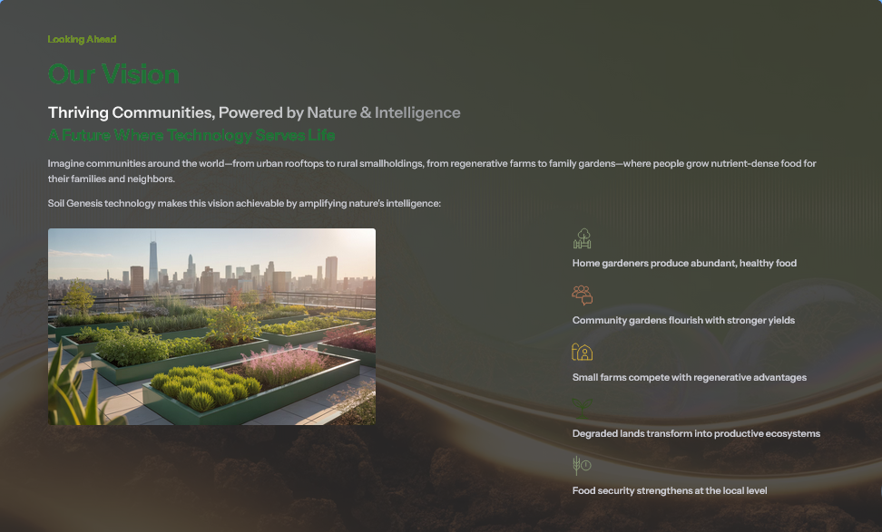

Soil Genesis reads how living soil is functioning and helps restore it - not only what the soil contains, but how it lives, changes, and recovers over time.
The Foundation of Living Systems

Soil health shapes most life on land, which makes soil the highest-leverage place to strengthen everything downstream - the plants that feed us and the communities they sustain.
Soil Genesis works toward that future by reading living function and supporting the structure and biology that allow soil to recover:
Where technology serves the soil, communities thrive.
The insight beneath the platform
We did not set out to build a product. We set out to listen.
Soil is not an inert medium. It is a living system whose fungal, microbial, root, water, and mineral processes shape nutrient cycling, structure, resilience, and recovery. That living activity reveals how the system is functioning over time.
The platform begins from three practical observations:
Fungal, microbial, root, water, and mineral processes operate as one changing system.
Composition shows what is present. Function shows how the living system is behaving and changing.
Response, stabilization, and recovery can reveal changes that a single static measurement may miss.
The goal is not to force a story onto soil. It is to build disciplined ways of observing what the living system reveals.
What the soil reveals over time becomes the foundation for what we build next.
Read the soil. Interpret its state. Restore structure and biology. Verify the change. Then read again, so every action teaches the next one.
Observe how living soil is functioning and changing over time.
Turn what we observe into a bounded picture of system state.
Support the structure and biology that allow soil to function.
Measure whether the system changed, recovered, or held its new state.
Use what the soil reveals to guide the next decision.
Separate measured evidence, interpretation, development targets, and what remains unvalidated.
The inventions are designed to strengthen one another across sensing, interpretation, restoration, delivery, and verification.
Sense. Understand. Restore. Verify. Repeat.
“Soil is alive, and its life reveals its state.”
Reading function, not composition alone
A portfolio organized by role within the same living-soil restoration loop.
Instruments and analytical layers for observing how living soil is functioning and how its state changes over time.
Tools for supporting structure and placing living biology where roots and fungi actually work.
Extensions of the same sensing and restoration logic across land, contamination, and field scale.
When we restore soil, we strengthen everything downstream.
This is not mystical thinking. It is documented ecology. Soil Genesis works at the foundation of a cascade that moves through ecosystems and communities.
Living fungal and microbial networks support nutrient cycling, aggregation, water movement, and resilience. This is the foundation everything else rests on.
Healthier soil can support stronger roots, improved nutrient access, and crops that are better equipped to withstand stress.
Healthier plants support insects, pollinators, birds, and wildlife. Restore soil function, and you strengthen the web of life above it.
More resilient local food systems can support access to healthy food and reconnect people with the biological foundation of nourishment.
Stronger local food security, greater ecological resilience, and deeper community connection around shared food production.
Restore the foundation, and the benefits can move through the whole system.
Ecologists describe cascades in which change at one level moves through the larger system. Soil restoration can become the beginning of a positive cascade - provided each downstream claim is tested at the level where it is made.
The Soil Genesis position: begin at the foundation, measure honestly, and build restoration systems whose effects can be observed rather than assumed.
A business model designed to make the science durable and self-sustaining.
Season-long soil work to develop fungal and microbial inoculants matched to a grower's fields, beginning with specialty crops.
Where Soil Genesis technologies are tested, refined, and validated under real conditions.
Signals paired with real outcomes, creating a proprietary dataset that sharpens the tools over time.
The interest is arriving, and the foundation is set.
Soil Genesis is moving through outside review, federal funding pathways, hardware development, and structured validation.
The next precision sensing core is being built and tested against the field-tested response platform, while comparative validation protocols continue to mature.
The company is early, but the work is no longer only conceptual. The hard parts are named rather than hidden.
Structured validation testing underway
Full invention portfolio strategically reviewed with experienced patent counsel.
Next-generation sensing hardware in active build and test.
Testing moving toward controlled comparative validation.
Company: Soil Genesis DAO LLC | Jurisdiction: Wyoming, United States
Living-soil intelligence and restoration platform - validation and engineering underway.
We are seeking research, commercial, and capital partners who understand that durable restoration begins by reading the system, supporting what allows it to function, and verifying what changes.
This is an invitation to help build the next layer of living-soil intelligence and practical restoration.
Current Stage: Early-stage platform development
Technology Status: Validation and engineering underway
Seeking: Aligned research, commercial, and capital partners